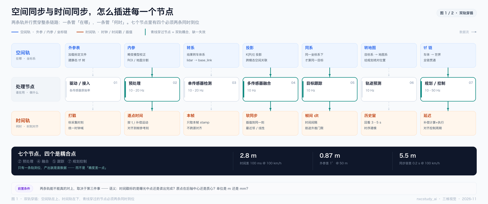

| 图 | 回答的问题 | 一句话结论 |
|---|---|---|
| 图 1 | 这两件事到底在哪些环节发生 | 7 个节点、2 条轨，其中 4 个是耦合点 |
| 图 2 | 耦合点里到底怎么“同时” | 不是两个步骤，是一次联合求解 T(t) |
| 表 2/3 | 错一点，值多少米 | 2.8 m / 0.87 m / 5.5 m，而半个车道只有 1.75 m |
| 表 6 | 出了问题先查哪条轨 | 时间 / 空间 / 语义，三类症状互不重叠 |
| 全文 | 三层的正确顺序 | 语义 → 时间 → 空间 → 校验，不是三条并列的开关 |
如果按分层画，会是“空间对齐层 → 时间对齐层 → 融合层”，看起来像流水线。但实际代码里根本不是这样：
加载外参发生在驱动 / 接入；内参用在预处理；投影矩阵用在融合；tf 链一直活到控制。
时间同理：打戳在驱动，逐点时间在预处理，软同步在融合，延迟补偿在控制。
所以它是一条从头贯到尾的轨，只是在每个节点上被“取用”了一次。把它画成层，会误导人去设计一个“统一对齐模块”——那个模块在工程上并不存在。
| 节点 | 空间轨 | 时间轨 | 耦合 |
|---|---|---|---|
| ① 驱动 / 接入 | 加载标定文件、建静态 tf 树 | 标采集时刻、统一时钟域 | — |
| ② 预处理 | 畸变模型校正、ROI / 地面分割 | 按逐点时间戳补偿运动 | 是 |
| ③ 单传感器检测 | 结果转车体系 | 只取本帧 stamp | — |
| ④ 多传感器融合 | 投影 K[R|t]、跨模态空间关联 | 软同步、插值到同一刻 | 是 |
| ⑤ 目标跟踪 | 同一坐标系下才谈得上“同一目标” | 帧间 dt、航迹外推门限 | 是 |
| ⑥ 轨迹预测 | 目标系 → 地图系 | 历史窗口、时序建模 | — |
| ⑦ 规划 / 控制 | 车体 → 世界，tf 链贯通 | 补偿计算与执行延迟 | 是 |
三个“没有耦合”的节点很有意思，它们代表两种极端：
把“错一点”翻译成“错多少米”，是判断标定该做到什么精度的唯一实用方法。下面三个数建议直接记住：
车道宽按 3.5 m 算，半个车道是 1.75 m。只要错位超过 1.75 m，目标就已经在隔壁车道了——上面三个数里有两个直接越线。
d = D · tanθ）| 角度误差 | 10 m | 30 m | 50 m | 100 m |
|---|---|---|---|---|
| 0.1° | 0.017 m | 0.052 m | 0.087 m | 0.175 m |
| 0.5° | 0.087 m | 0.26 m | 0.44 m | 0.87 m |
| 1° | 0.17 m | 0.52 m | 0.87 m | 1.75 m |
| 2° | 0.35 m | 1.05 m | 1.75 m | 3.49 m |
d = v · Δt）| 时间误差 | 30 km/h | 60 km/h | 100 km/h | 120 km/h |
|---|---|---|---|---|
| 10 ms | 0.08 m | 0.17 m | 0.28 m | 0.33 m |
| 50 ms | 0.42 m | 0.83 m | 1.39 m | 1.67 m |
| 100 ms | 0.83 m | 1.67 m | 2.78 m | 3.33 m |
| 200 ms | 1.67 m | 3.33 m | 5.56 m | 6.67 m |
时间轨和空间轨能不能真的对上，取决于第三件事——语义。时间戳标的是曝光中点还是读出完成？原点在后轴中心还是质心？单位是 m 还是 mm？
语义错了，两条轨会双双“看起来对齐了”，然后一致地错。这是最难查的一类问题，因为所有校验指标都正常。所以顺序应该是：定义 → 对齐 → 校验，而不是三条并列的检查。
上面一行空间轨、中间一行节点、下面一行时间轨。青线穿过的四个节点，是两条轨必须同时到位的地方。

| 图上位置 | 看什么 | 读法 |
|---|---|---|
| 上排蓝色卡 | 空间 | 外参表 → 内参 → 转系 → 投影 → 同系 → 转地图 → tf 链，七段各取一次 |
| 下排橙色卡 | 时间 | 打戳 → 逐点 → 本帧 → 软同步 → dt → 窗口 → 延迟 |
| 青色竖线 | 耦合 | 穿过的节点：空间与时间被乘在同一个式子里，缺一条出废数据 |
| 灰色虚线 | 独立 | 两条轨在此各做各的，不要求同时（① ③ ⑥） |
| 底部深色条 | 量级 | 三个越线数字，见第 3 节 |
读图的顺序建议反过来：先看青色竖线落在哪四个节点上，那四处就是这套系统最脆弱的地方；再看灰色虚线那三段，它们说明“不是所有节点都要同时”——如果一张链路图上到处都是耦合点，通常说明它把不同层次的东西混在了一起。
图 1 标出四个耦合点，这里拆三个最能说明问题的。它们分别代表三种“耦合方式”：逐点、跨模态、闭环。
机械式激光雷达转一圈约 100 ms，转的过程中车在动。所以这一帧点云里，每个点都是在不同位姿下打出来的。要把它“拉正”，必须对每个点做一次 T(ti) · Tbase←lidar——空间和时间是乘在一起的，没有“先算空间再算时间”的余地。
这就是为什么点云格式里每个点都带自己的时间戳（如 PointXYZIT.timestamp），也是为什么去畸变节点要同时订阅 twist 和 imu：它需要每一个时刻的运动。
缺外参：点云整体贴在错的位姿上，看起来很“干净”，但跟地图对不上。缺点时刻：高速时点云沿运动方向被拉长，杆状物变成斜的——这个肉眼可辨。
这里有个常被跳过的环节：融合之前必须先“配对”。激光雷达的点是表面回波，相机的像素是辐亮度积分，毫米波雷达的检测是 cluster 质心加多普勒——它们根本不是同一个物理量，严格讲无法“融合”，只能互相约束。
所以第一步是回答：这个 lidar cluster 和那个 image bbox，是不是同一个东西？而这个判断，同时依赖空间（投影对不对）和时间（是不是同一刻）。
缺空间：框被投到隔壁车道，关联直接错。缺时间：把相隔 0.2 s 的目标当成同一个，速度估计直接崩。
这一条最容易被忽略，因为它在“感知”之外。规划算出一条轨迹，从计算完成到方向盘真正转过去，中间有几十毫秒的延迟，这段时间里车又走了 1–2 m。所以下发的不是“现在的指令”，而是“在 τ 之后生效的指令”。
缺空间：方向打在错的路上。缺时间：高速时车身画龙——经典的高速画龙，很多就是延迟没补偿。
T(t)。
每个面板是同一种结构：两路输入 → 汇聚成一条总线 → 一次变换 → 一个输出，下面接“缺一条会怎样”和“怎么验证”。
| 面板 | 缺一条会怎样 | 怎么验证 |
|---|---|---|
| A 去畸变 | 外参错 → 整体贴错位姿 缺时刻 → 点云被拉长 | 匀速直线 + 路边杆状物，看点云是否沿运动方向被拉长 |
| B 融合关联 | 缺空间 → 投到隔壁车道 缺时间 → 把两刻当成一刻 | 点云叠到图像上对远处杆物，1° 在 50 m 处就是 0.87 m，肉眼可辨 |
| C 延迟补偿 | 缺空间 → 打在错的路上 缺时间 → 高速画龙 | 给一个阶跃转向，看是否过冲、是否画龙 |
“同一时刻 + 同一坐标系 + 同一语义，三者缺一不可”这句话，按图去读，次序其实很明确：
语义（定义） → 时间（对齐到同一刻） → 空间（搬到同一个系） → 校验
理由很直接：时间和空间都是“对齐操作”，而任何对齐操作都需要先知道“对齐的是什么”。时间戳的语义不定，插值就是在精确地对齐一个错误的时刻；坐标系原点不定，外参就是在精确地搬到错误的位置。
所以“外参管空间、时间戳管时间”这句话，准确的说法是：外参是空间对齐的核心参数之一，时间戳是时间对齐的必要元数据——两者都只是“核心部分”，都不等于对齐本身。
同一个“目标飘了”，可能来自三条完全不同的轨。这张表是两份图最实用的产出。
| 现象 | 先查 | 典型原因 |
|---|---|---|
| 高速时点云沿运动方向被拉长 | 时间 | 逐点时间戳缺失，或去畸变没用 IMU / twist |
| 目标在图像上投到隔壁车道 | 空间 | 外参标定漂移，或用了错的变换方向 |
| 静止时正常、一动就错 | 时间 | 时间戳是“接收时刻”而非“采集时刻” |
| 近距离正常、远处越来越偏 | 空间 | 角度误差被距离放大（1° @ 50 m = 0.87 m） |
| 目标朝向反了 180° | 语义 | 坐标系手性 / 朝向定义不一致 |
| 同一目标被计成两个 | 时间 | 同步窗口过大，或丢帧未标记 |
| 高速画龙、过冲 | 时间+空间 | 控制延迟未补偿 |
| 所有指标正常但行为诡异 | 语义 | 原点、单位、box 定义在链路某处被换过 |
frame_id → child_frame_id 方向正确（外参文件名和方向经常是反的）| 文件 | 说明 |
|---|---|
2026-11-时空同步-图1-双轨穿插.png | 3120 × 1313，2× 超采样 |
2026-11-时空同步-图2-三个耦合点.png | 3120 × 1209，2× 超采样 |
_make_spacetime_sync.py | 图 1 / 图 2 生成脚本，改 NODES / PANELS 重跑 |
2026-11-时空同步-双轨穿插与三个耦合点.md | 文字版（含量级表与完整清单） |
| 记什么 | 一句话 |
|---|---|
| 两条轨 | 空间管“在哪”，时间管“何时”；两条都贯穿全链路，每个节点各取用一次 |
| 四个耦合点 | ② 预处理 ④ 融合 ⑤ 跟踪 ⑦ 规划控制——缺一条出的是废数据，不是精度差一点 |
| 三个数字 | 2.8 m / 0.87 m / 5.5 m；半个车道 1.75 m，三个里有两个越线 |
| 一个顺序 | 语义 → 时间 → 空间 → 校验：先定义“对什么”，再谈“怎么对” |
| 一条判据 | 不是“两个数能不能对上”，而是“是不是同一个物体、同一时刻、同一物理量” |
坐标系与三类变换（2026-09）· 车体坐标系原点与手性约定 | 传感器链路 图 4 时间同步（2026-11）· 软 / 硬 / 算法三层 | 自动驾驶定位 图 4 坐标系变换链（2026-11）· 五个系、四次变换